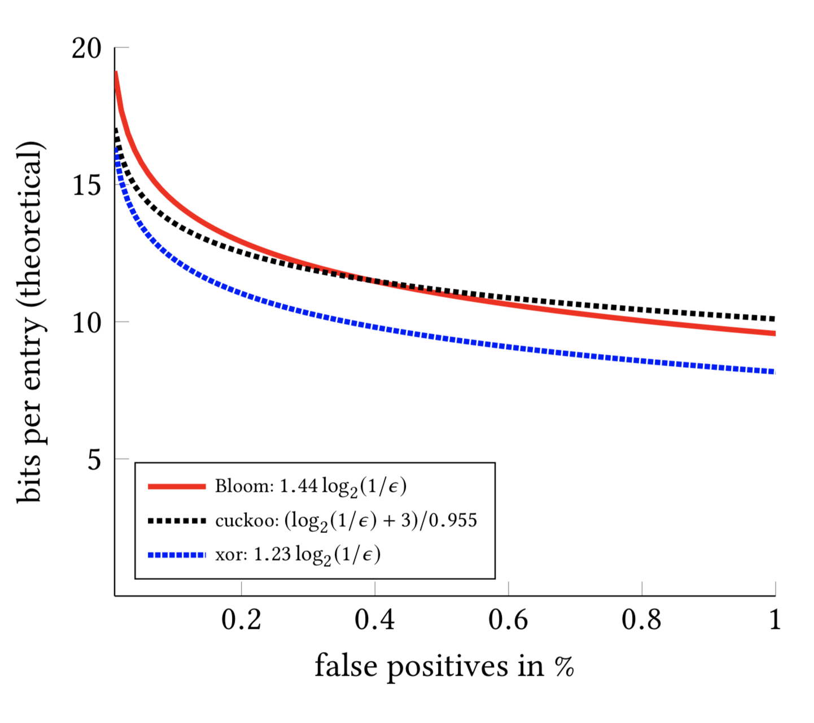

📦
Smaller than Bloom
Binary fuse filters approach the information-theoretic lower bound — well under 9 bits per entry, beating Bloom and cuckoo filters at the same false-positive rate.
A single-header C library implementing xor filters and state-of-the-art binary fuse filters — a faster, more compact alternative to Bloom and cuckoo filters that compresses naturally and serializes cleanly.
Bloom filters check whether an element belongs to a set. These do the same job — only smaller and faster.
Binary fuse filters approach the information-theoretic lower bound — well under 9 bits per entry, beating Bloom and cuckoo filters at the same false-positive rate.
Membership queries touch only a few cache lines. Construction is fast too — millions of keys indexed per second.
Unlike Bloom filters, xor and binary fuse filters compress well with standard tools (gzip, zstd, …) for even smaller on-disk footprints.
Copy one .h file into your project. No build system, no dependencies — pure C99 under the business-friendly Apache 2.0 license.
Persist filters with fast memory-copy serialization, or use the packed format to squeeze out zero bytes when every byte counts.
Shipping in real systems including Databend, ntop, InfiniFlow and Pebble.
Your set is a collection of 64-bit integers. Hash strings or other data to 64 bits first — collisions just need to be unlikely.
#include "binaryfusefilter.h"
uint64_t *big_set = /* your 64-bit keys */;
binary_fuse8_t filter;
bool is_ok = binary_fuse8_allocate(size, &filter);
if (!is_ok) {
// out of memory
}
is_ok = binary_fuse8_populate(big_set, size, &filter);
if (!is_ok) {
// out of memory
}
binary_fuse8_contain(big_set[0], &filter); // true
binary_fuse8_contain(rand_value, &filter); // almost always false
binary_fuse8_free(&filter);The default binary_fuse8_t uses an 8-bit fingerprint: ≈9 bits/entry and a 1/256 (0.4%) false-positive rate.
Need fewer false positives? binary_fuse16_t uses about twice the memory for a false-positive rate 256× smaller — about 0.0015%.
Construction is fast but uses temporary memory — plan for roughly 24 bytes per entry. A low-memory construction path exists at some speed cost.
Prefer the state-of-the-art binary fuse filters. The original xor filters
(xorfilter.h, types xor8_t / xor16_t) are also included for compatibility.
Theoretical bits per entry as a function of the false-positive rate. Lower is better — binary fuse filters sit closest to the floor.

Lower is better. Binary fuse filters approach the information-theoretic floor — using fewer bits than xor, cuckoo and Bloom filters at every false-positive rate.
Two formats. Use the unpacked format by default; reach for packed only when you must preserve every byte.
size_t bytes = binary_fuse16_serialization_bytes(&filter);
char *buffer = (char*) malloc(bytes);
binary_fuse16_serialize(&filter, buffer);
binary_fuse16_free(&filter);
binary_fuse16_deserialize(&filter, buffer);
free(buffer);size_t bytes = binary_fuse16_pack_bytes(&filter);
char *buffer = (char*) malloc(bytes);
if (binary_fuse16_pack(&filter, buffer, bytes) != bytes) {
// pack failed
}
binary_fuse16_free(&filter);
if (!binary_fuse16_unpack(&filter, buffer, bytes)) {
// unpack failed
}
free(buffer);Serialization does not convert byte order — serialize and deserialize on machines with the same endianness.
The same filters, implemented across the ecosystem. Need C++? We recommend binfuse — or roll your own thin wrapper.
The research behind the library.
Thomas Mueller Graf, Daniel Lemire · Journal of Experimental Algorithmics · DOI 10.1145/3510449
Thomas Mueller Graf, Daniel Lemire · Journal of Experimental Algorithmics 25(1), 2020 · DOI 10.1145/3376122